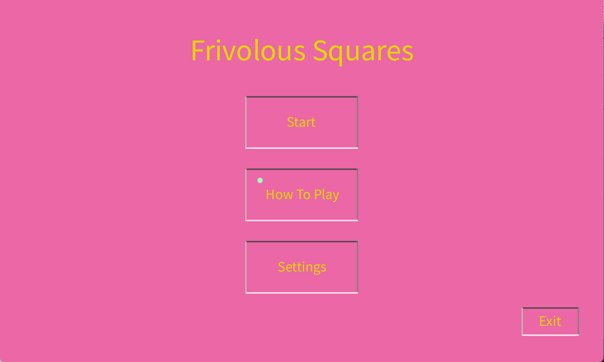

Frivolous Squares
In one of my Intro to Comp. Sci. courses, we made use of Processing, a basic graphics design language based off of Java. In one of our assignments, we were told to make a game which had a points system, visual/audio effects, and a level-end (game over screen or similar). Since I was given enough time, and had the detailed reference documentation offered by Processing, I took it upon myself to create a more complex program than a simple game that would start when you ran the program.
I designed the Main menu to be as procedural as possible, with a Settings screen for color blindness settings and audio sliders, as well as a How To Play screen to explain the rules of the game to the player. The Start screen leads to an option between Easy, Medium, and Hard, so that the user can pick the difficulty option most suitable for them. Easy and Medium introduced stationary squares (Medium had a shorter timer), and Hard had a short timer with moving squares.

This is easily my favourite program I have worked on, as I got to develop a game, make a GUI, and got the creative space to try to do what I wanted with the game.
Below is the sound track that plays in the program ("8 Bit Legends" by Tim Kulig):